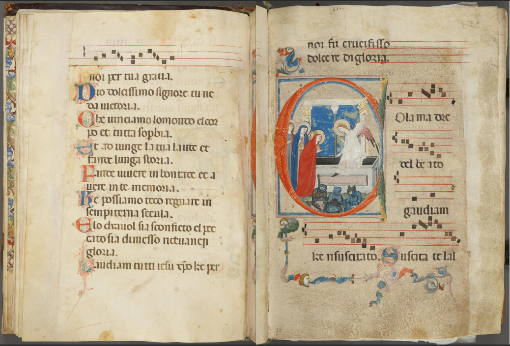
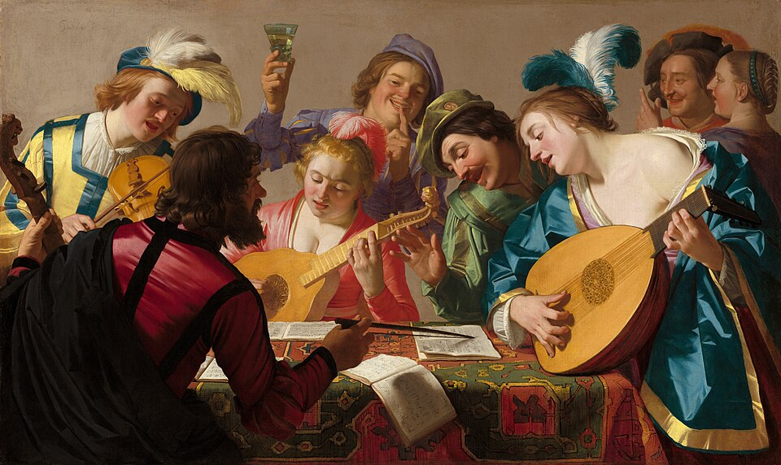
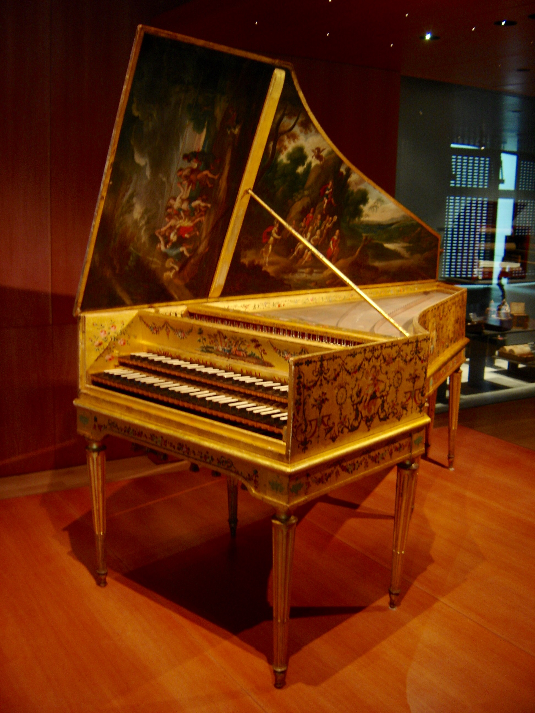
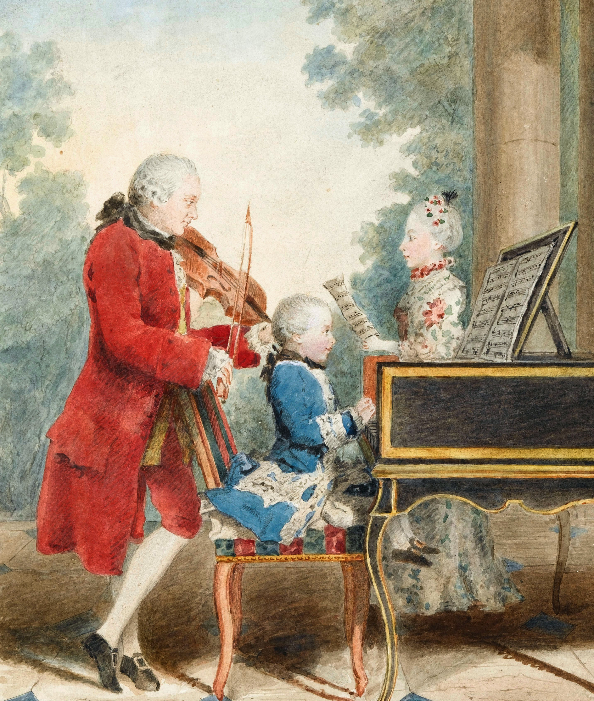
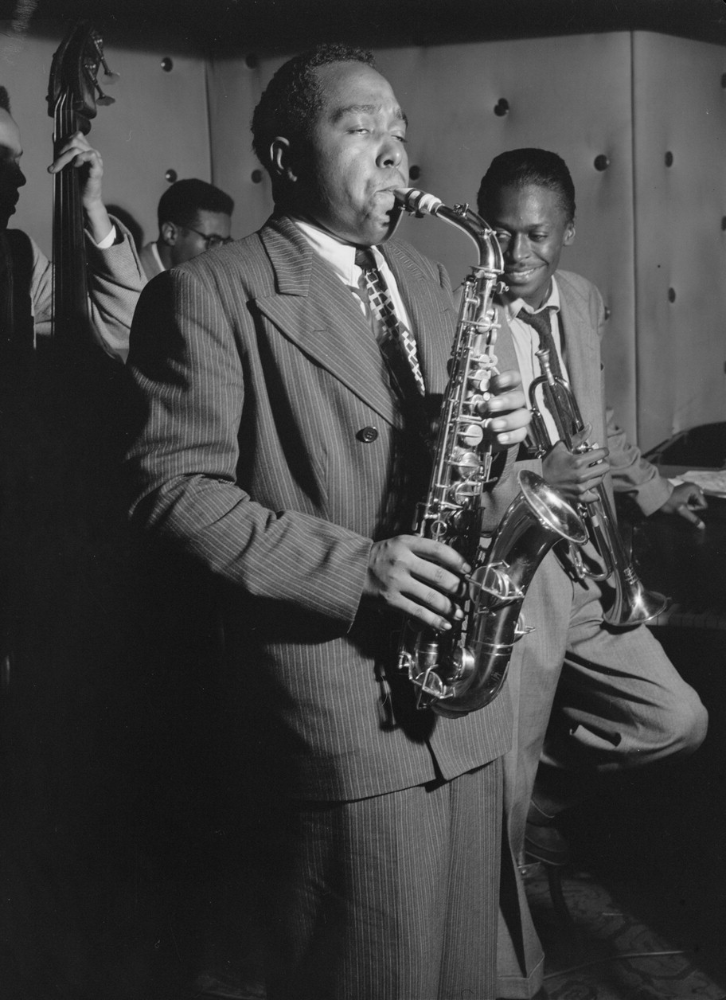
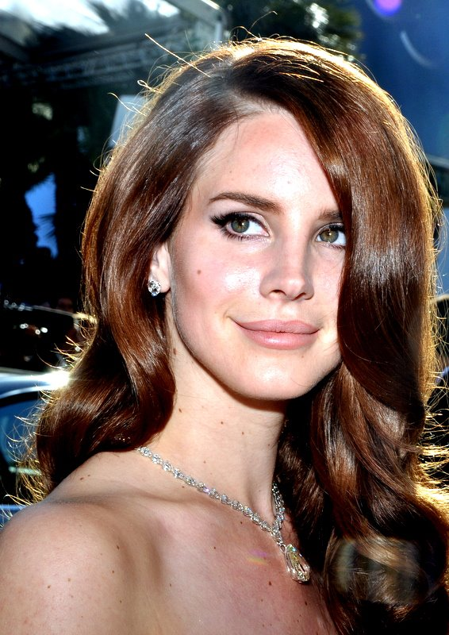

Western music developed based on the music of the Greeks and Romans.
There are six historical eras in Western culture: the Medieval, Renaissance, Baroque, Classical, Romantic, and Modern.
🎶 The Medieval Period (c. 500–1400) The medieval period is the earliest stage of Western music, beginning after the fall of the Roman Empire and lasting until the start of the Renaissance.

By digitized manuscript by Biblioteca Nazionale Centrale di Firenze, Public Domain
The Renaissance Period (c.1400-1600) era of classical music saw the growth of polyphonic music, the rise of new instruments.
The Renaissance (meaning “rebirth”) was a time when art, science, and culture across Europe were rediscovered and transformed. In music, this period marks a shift away from the strict, church-dominated style of the medieval era toward something more balanced, expressive, and human-centered.
music was very improtant for the church, but it also began to be popular in public life, ordinary can start to understand and listen to it. For the first time, music became something people enjoyed not just for worship but for emotion, storytelling, and beauty.

Gerard van Honthorst - National Gallery of Art, Washington, D. C., online collection
The Baroque Period (c.1600-1750)
The baroque period is known for its rich, dramatic, and expressive style. Music from this time often aimed to evoke strong emotions and was closely connected to art, religion, and royal courts.
Harpsichord was the most improtant insturment at that time,and many pieces included a steady bass line called basso continuo. This period also saw the development of important musical forms like opera, concerto, and fugue.
Famous composers in baroque period include Johann Sebastian Bach, George Frideric Handel, and Antonio Vivaldi. And their works are still highy perfromed today.

Clavecin par Andreas Ruckers (Anvers, 1646) ravalé par Pascal Taskin (Paris, 1780)
🎶The Classical Period (c.1750-1850)
the most significnat somposer in the classical period would be Wolfgang Amadeus Mozart!!!(in the picture)
Is known for its clarity, balance, and elegance. Unlike the Baroque period, Classical music is simpler in texture and focuses on clear melodies supported by harmonious accompaniment. And the piano became an imptotant and really popular insturment replacing the harpsichord. Music was often performed in public concerts, not just for royalty or the church.
Famous composers of this period include Wolfgang Amadeus Mozart, Joseph Haydn, and Ludwig van Beethoven.

Louis Carrogis Carmontelle - originally uploaded to en.wikipedia by Brianboulton (talk · contribs) on 14 November 2008, 16:07 under the file name Mozart family crop.jpg.
The Romantic Period (c.1820-1900)
The romantic period came after the Classical period and focused much more on emotion, imagination, and personal expression, espcailly on storytelling.
Composeres used larger orchestra and harmonious, and also piano was the most popular insturment. Romantic composers create music that was emotional, dramatic and individualistic. The music influenced by literature, poetry, art, and philosophy.
Famous composers in this period include Frédéric Chopin (polish pianist)
Ludwig van Beethoven (the bridge between classical period and romantic period)
Franz Liszt (piano virtuoso, dramatic and powerful)
Robert Schumann (poetic, expressive works)

Josef Danhauser's 1840 painting Liszt at the Piano featuring Franz Liszt at the piano surrounded by (from left to right) Alexandre Dumas, Hector Berlioz, George Sand, Niccolò Paganini, Gioachino Rossini and Marie d'Agoult, with a bust of Ludwig van Beethoven on the piano
Josef Danhauser - https://recherche.smb.museum/detail/968187
Early modern (c. 1910-1945)
In early modern period, composers experimented a lot, music became more absctract and sometimes chaotic
There is no claer key center, which means the there is clashing sounds used intentionally used in melody. Music also influenced by war and society.
Composers:Igor Stravinsky,Arnold Schoenberg,and Béla Bartók
Jazz & Popular Music Rise (1920s-1940s)
Jazz began mainly in New Orleans, then spread to places like Chicago and New York City, very strong African American influence, it is the brith of modern popular music.
it is full of creativity and every performace could be different. There is blue notes, Improvisation and Swing rhythm...
improtant jazz musicians Louis Armstrong,Duke Ellington and Ella Fitzgerald

Digital & Streaming Era (2000s–Now)
Music become igital, global, instant Anyone can produce music on a laptop
There is applications like spotify, apple music...
improtant artist like Billie Eilish, Taylor Swift, Raye, Lana Del Ray

link tooo...